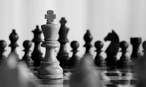
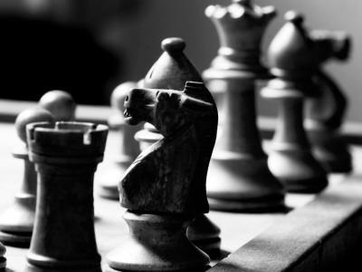
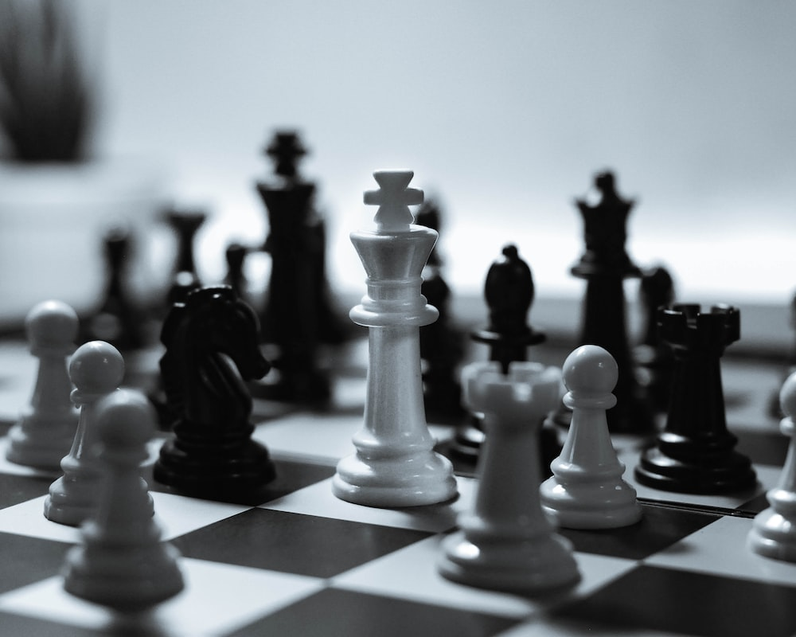
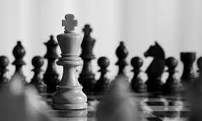
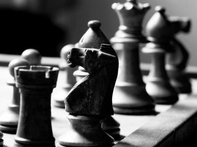
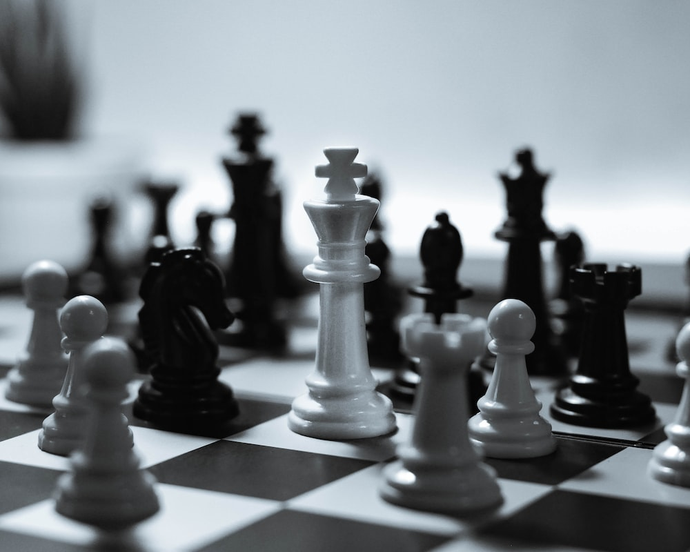

Szachy
Galeria
Linki
Strategiczna gra planszowa rozgrywana przez dwóch graczy na 64-polowej szachownicy, za pomocą zestawu pionów i figur. Komitet Olimpijski uznaje szachy za dyscyplinę sportu. Szachy należą do gier z doskonałą informacją .
 




